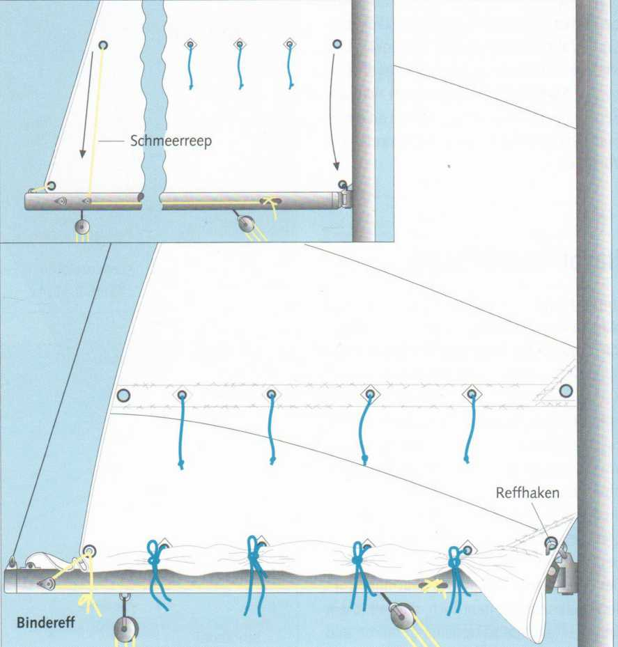
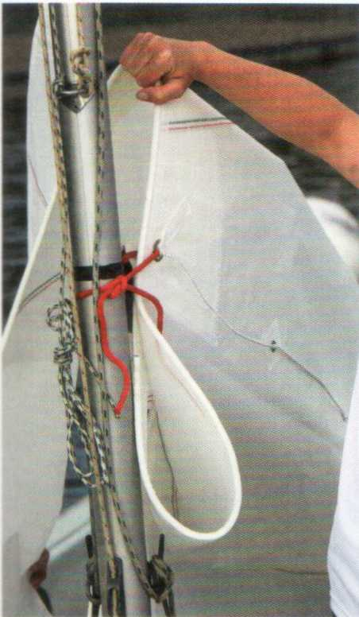
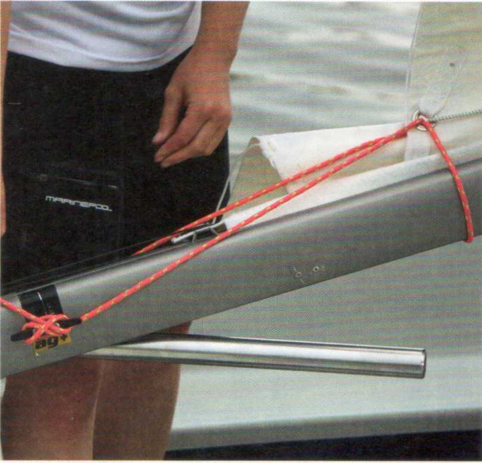
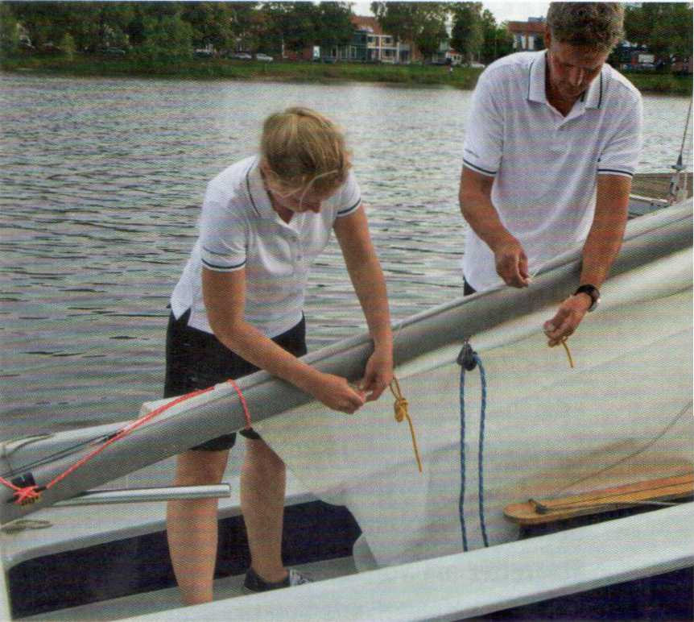

Когда ветер усиливается, необходимо взять рифы (reffen), то есть уменьшить площадь парусов, чтобы они предоставляли ветру меньшую поверхность атаки. В противном случае это вызовет сильный крен (Krängung) лодки, снижающий скорость и увеличивающий дрейф. Кроме того, килевые яхты с увеличением крена иногда становятся настолько приводимыми (luvgierig), что рулевой едва может удерживать курс. Наконец, при чрезмерной парусности возможны поломки. Швертботы с избыточной парусностью, возможно, удаётся удерживать в вертикальном положении лишь с заполаскивающими парусами — а это означает постоянную угрозу опрокидывания.
Для уменьшения грота существуют различные системы.
1. Так называемый поворотный, роликовый (Dreh-, Roll-) или патентный риф (Patentreff).
Гик вращают рычагом или рукояткой, наматывая тем самым парус снизу на гик. Этот принцип встречается только на старых яхтах, поскольку имеет существенные недостатки: парус стоит уже не хорошо, ткань сильно деформируется, и оттяжка гика (Baumniederholer) больше не может использоваться.
2. Современный роликовый риф (Rollreff).
Грот наматывается рифовым линем (Reffleine) на профиль с полой камерой и разматывается обратно вытяжным линем (Ausholerleine).
Полая камера располагается в мачте или на мачте (вертикальная система) либо в гике (горизонтальная система). Недостатки старого поворотного рифа исчезают, однако требуются специально скроенные паруса. Преимущества: никому не нужно в непогоду покидать
безопасный кокпит для взятия рифов. Парус можно плавно уменьшать и точно подстраивать под ветровые условия. Недостатки: механизм, требующий тщательного обслуживания и порой ненадёжный.
Рифление риф-штертами (Reffen mit Bindereff)
Потравить грота-фал (Großfall) настолько, чтобы риф-штерты опустились до гика, и сразу закрепить. Переднюю и заднюю шкаторины обтянуть по рифовым кренгельсам (Reffkauschen). Они должны принять на себя всё давление на парус. Часто рифовый кренгельс передней шкаторины можно зацепить за рифовый крюк (Reffhaken) на гике, а заднюю шкаторину — обтянуть вниз на гик при помощи шмеррипа (Schmeerreep) — небольших талей. Провисающую ткань свернуть на одну сторону гика и закрепить риф-штертами.

3. Штертовый риф (Binde- oder Bändselreff).
В гроте обычно имеются два, реже три ряда риф-штертов (Reffbändsel), которыми зарифленная ткань крепится к гику.
Вариантом является крючковый риф (Hakenreff). Вместо риф-штертов в нём используется сквозной рифовый линь, петли которого зацепляются за рифовые крюки на гике.
Преимущества: зарифленный парус стоит безупречно. Ткань не деформируется. Специально скроенный парус не требуется. Недостатки: бо́льший объём работы при рифлении, так как заднюю шкаторину нужно отдельно обтягивать на гик, а каждый штерт — завязывать.
Работа небезопасна — стоя у мачты, у фала, на крыше каюты или банке кокпита, — если фал и шмеррип не выведены в кокпит.
Как правило, только две фиксированные ступени рифления — от ряда к ряду штертов, — которые часто расположены слишком далеко друг от друга.
На швертботах без рифового устройства для рифления грота просто снимают гик с его крепления — вертлюга (Lümmelbeschlag) — и наматывают парус вручную. Однако это возможно лишь в том случае, если грота-шкот крепится к скользящему кольцу (Schotring) на гике или на ноке гика (Baumnock), откуда его нужно отсоединить и после рифления снова присоединить.
Проводка шкотов многих трапециевых швертботов (Trapez-Jollen) вообще не позволяет рифить грот. Когда лодку на трапеции уже невозможно откренивать, приходится либо убирать стаксель, либо грот.
На килевых яхтах при усилении ветра обычно большую геную заменяют на меньший стаксель (Fock). Это простая замена паруса — ещё не рифление.
Однако всё больше крейсерских яхт оснащается закруткой стакселя (Vorsegel-Rollreffanlage). Они обходятся одним передним парусом, который наматывается на профиль форштага (Vorstagprofil). Таким образом, и здесь есть возможность плавно уменьшать стаксель, то есть по-настоящему рифить. Управление также осуществляется из кокпита.
Для рифления лодка должна лежать почти в линии ветра, а при роликовой закрутке грота — по возможности точно против ветра. Когда ветер ослабевает, рифы отдают в обратном порядке: штерты, кормовой рифовый кренгельс (шмеррип), носовой рифовый кренгельс отдать и фал обтянуть. Это называют также «вытряхнуть» риф (Ausschütten des Reffs).

Найти рифовый кренгельс на передней шкаторине и закрепить на мачте (рифовым крюком или узлом).

Так же поступают с задней шкаториной. Закрепить риф-штерт на гике...

...аккуратно скатать зарифленную ткань и закрепить риф-штертами.